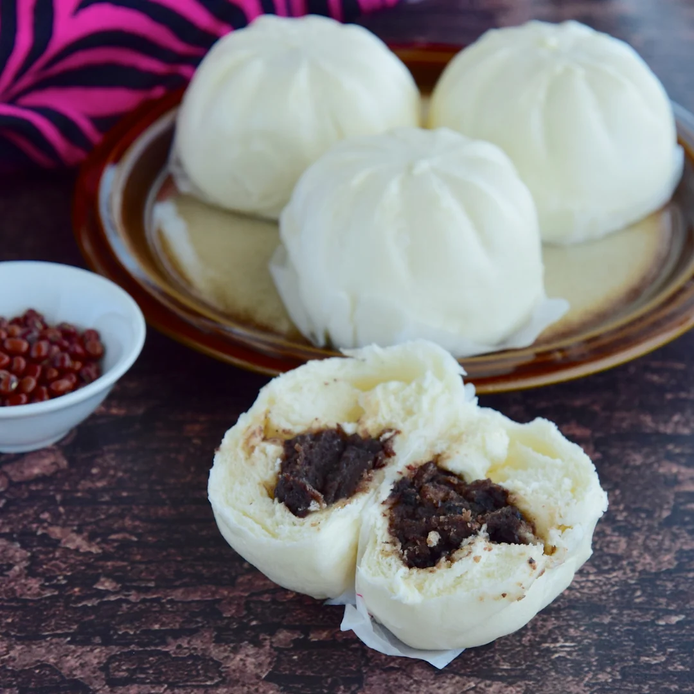

A little taste of home
Siopao
with a cozy twist.
Soft, pillowy buns wrapped around a hearty mongo filling. A comforting favorite, made for sharing.
Meet the fillings
Mongo siopao
01 / 03Comfort in every soft, warm bite